In the main menu, choose Import / Export. Also, added import SMS database and an option to import a WhatsApp database. This option is still experimental and requires some access to the unencrypted WhatsApp messages database. The WhatsApp import is described here in more detail.
These backup / restore actions can be performed at all times, not just when setting Signal up. However, the encrypted backup overwrites the current database completely. The plaintext import adds messages to the current database (there is no check if they already exist so you might end up with double messages) but it does not deal with any media. The WhatsApp import works the same, it adds messages to the database.
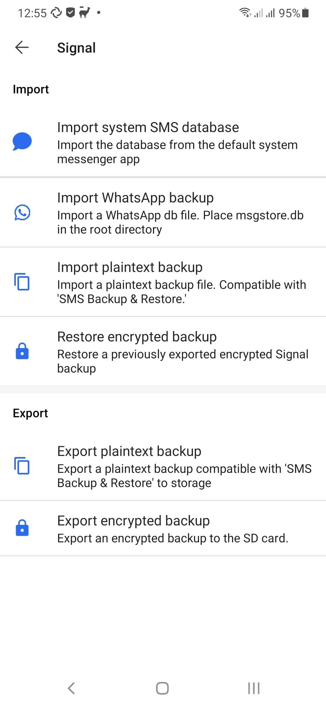
This option works different depending on the Android version. As of version 5.23.1.1-JW, Signal-JW on Android 11 can use almost any directory to store its backups. This requires a new permission for the plaintext and full backups, because they require the use of full path names Signal-JW will ask for the new all-files access permission that was introduced in Android 11 to store its backups in the chosen directory. If Signal-JW does not have the permission it will ask for it if you make a plaintext or full backup.
For Android 10 and lower, the default location for the backups is the same as with standard Signal, in the internal storage card. However, sometimes this is not preferable, mostly if internal storage is too low. Therefore there is an option to save the backups on removable storage. However, due to access restrictions on unrooted devices, the location used will be wiped when Signal is uninstalled so be sure to copy the backups to a safe place before you do that.
Af of Signal 4.74.0, on Android 10 and higher Signal uses a location picker to choose a backup location and this option is no longer needed or available. It remains available for older Android versions.
The base location of the backups on Android 10 and below is:
And the several types of backups are stored in their own subdirectories:
The full backup is a plain dump of the (encrypted) database and attachments. Due to the changes made in Signal 4.16, the encryption key is stored in the Android keystore on devices running Android 6 or higher. Therefore it is necessary to store the unencrypted database keys with the backup to be able to restore it. Because this is a security risk for data at rest access when the device gets compromised, there is an option added to store the entire backup in an encrypted zipfile (encrypted with AES-256), which uses the same password of as the standard backup. To use this the standard backup has to be configured, otherwise the zipfile will be unencrypted.
For Android 10 and below, the options screen looks like this:
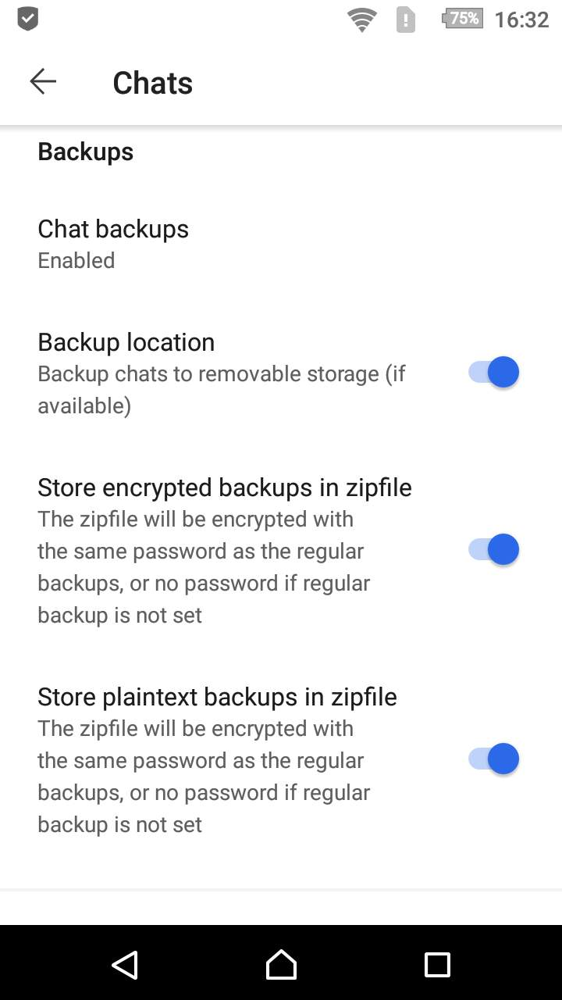
For Android 11 and up, the options screen looks like this. Instead of the generic storage description it shows the backup path. A tap on the path will show an option to change the backup location.
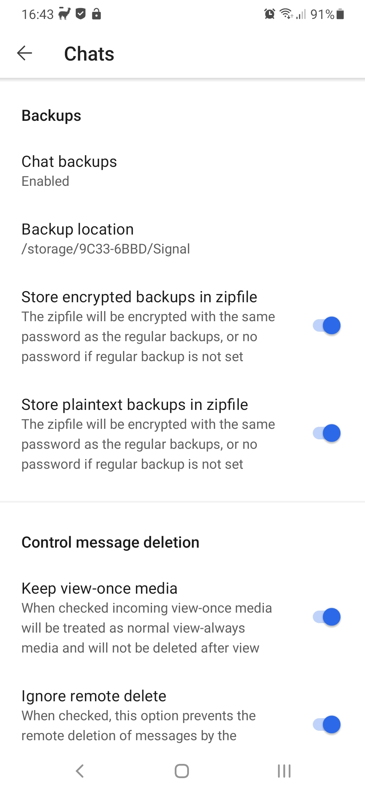
However, a build that is too old might not work smoothly with the Signal server, or might not work at all with the server.
The app access control of standard Signal is the same as the Android lockscreen, and can be a code, a pattern or biometrics like a fingerprint. A 4rth method was added: a passphrase exclusively used for Signal. Note that this is a soft lock: the passphrase is not used to encrypt the database, like it was in Signal 4.15 and before. It is just used to access the database (to unlock the mastersecret).
The standard situation is the same as with standard Signal:
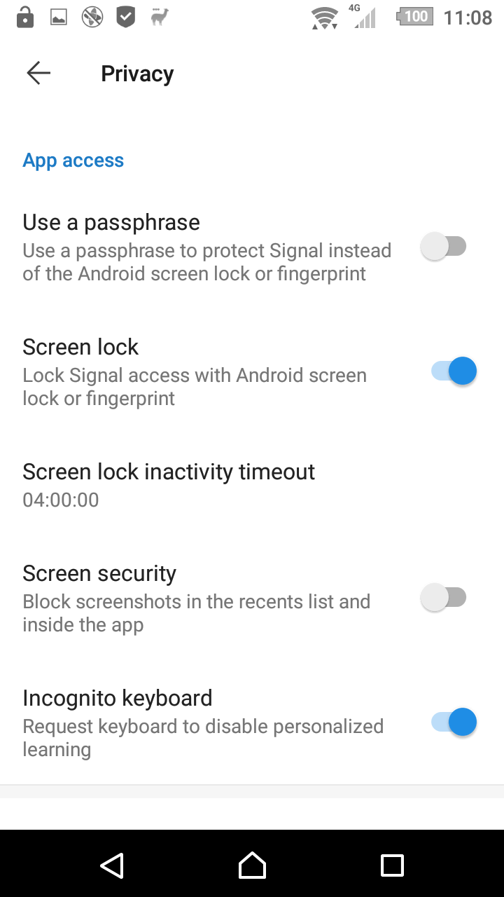
However, when the passphrase option is selected:
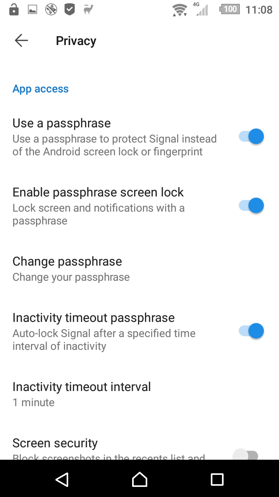
the user is asked to enter a passphrase
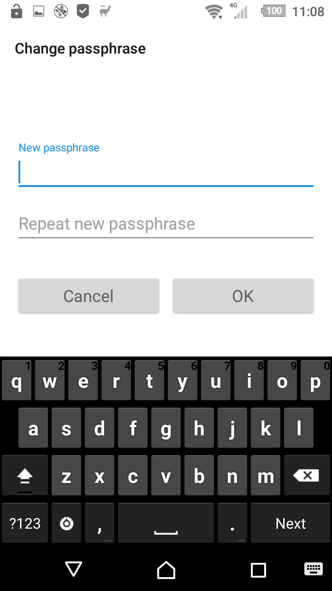
When this option is set, incoming view-once media messages will be treated as normal media messages that can be viewed as often as you like and can be saved to storage. Changing this option does not convert already received view-once media, they will remain view-once or normal in your conversation as they were.
Messages that were sent as view-once will get a reaction to indicate they were sent as view once:
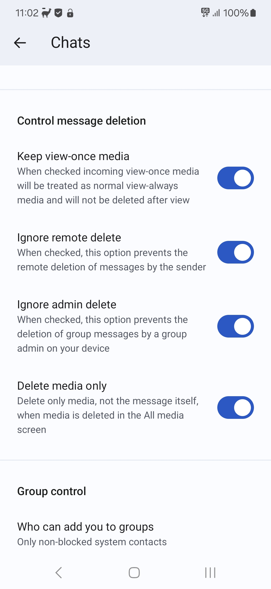
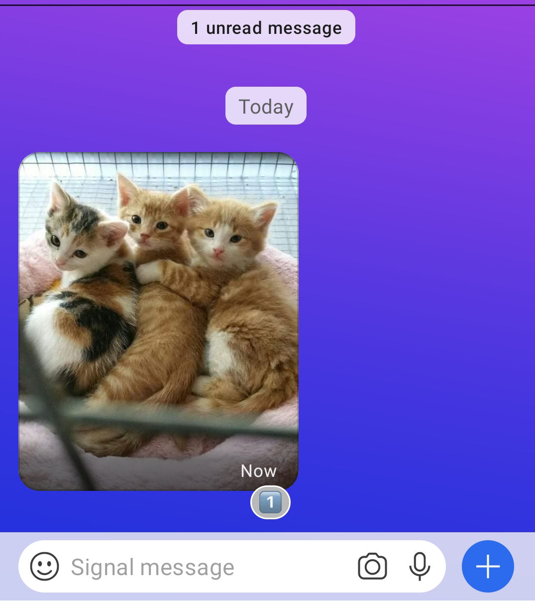
If you don't like it that others can remove messages they sent from your conversation, you can use the following option. Remote delete requests will be ignored if this option is set.
Messages that are remote deleted will get a reaction to indicate the sender tried to remote-delete it:
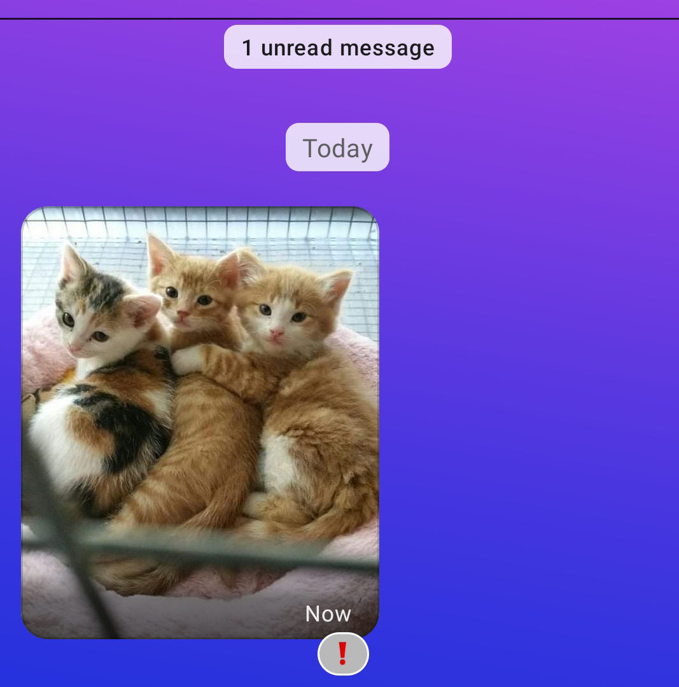
If you don't like it that group admins can remove messages in your groups, you can use the following option. Admin delete requests will be ignored if this option is set. This works only on your local device and does not affect how admin deletes work on other group member's devices.
Messages that are admin deleted will get a reaction to indicate the sender tried to remote-delete it, a double exclamation mark.
One major issue I have with Signal is that when you clean up room when deleting large media files, it also deletes the associated message which you might want to keep. This option makes Signal only delete the media, not the message text.
The standard version of Signal only supports the "normal" type when sending Google Map images. This option lets you choose between all available options. Changing this option does not convert already received locations,
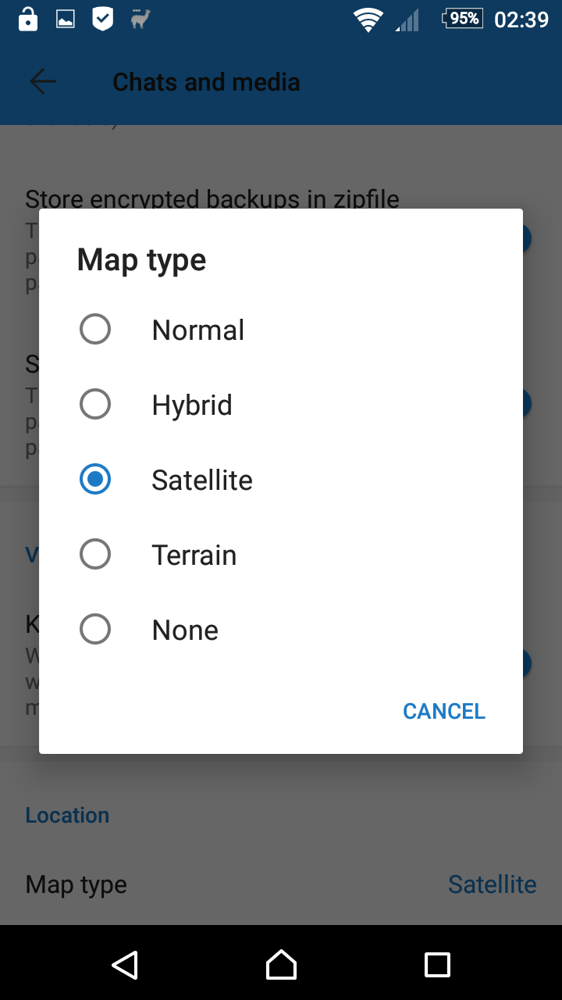
You can also switch between normal, satellite and terrain view within the place selector:
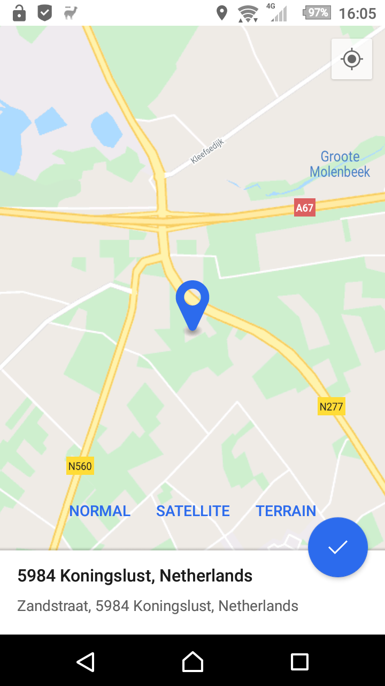
This option will give you the choice who can add you to a group. The available options are:
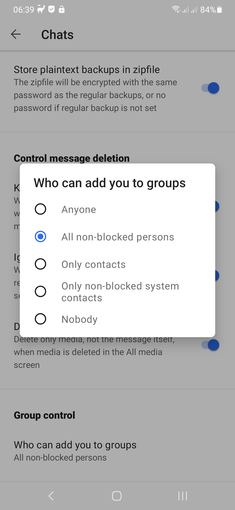
prevent a blocked contact to add you to a group. It will also prevent you seeing the kind of group spam that consists of repeated join request / cancel request messages in a group from this contact.If your phone has the Google Play Services installed, notifications go over Firebase Cloud Messaging (FCM). If your device has no Google Play Services, a websocket connection to the Signal server will be kept open (and a background notification icon will be shown). This might consume a little more power than using FCM.
Sometimes FCM this works unreliable and messages only arrive when Signal is opened. In these cases I added an option to manually switch between websockets and FCM (of course, if your device does not contain Google Play Services you can't select FCM).
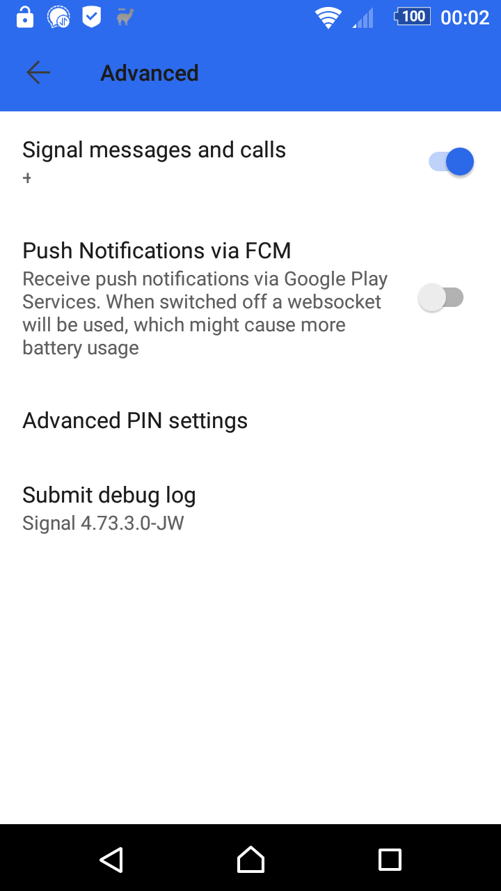